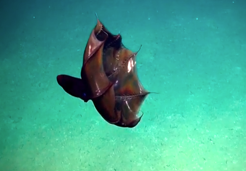
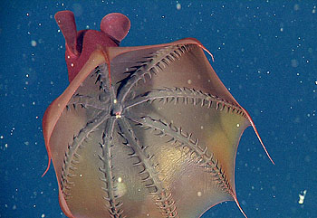
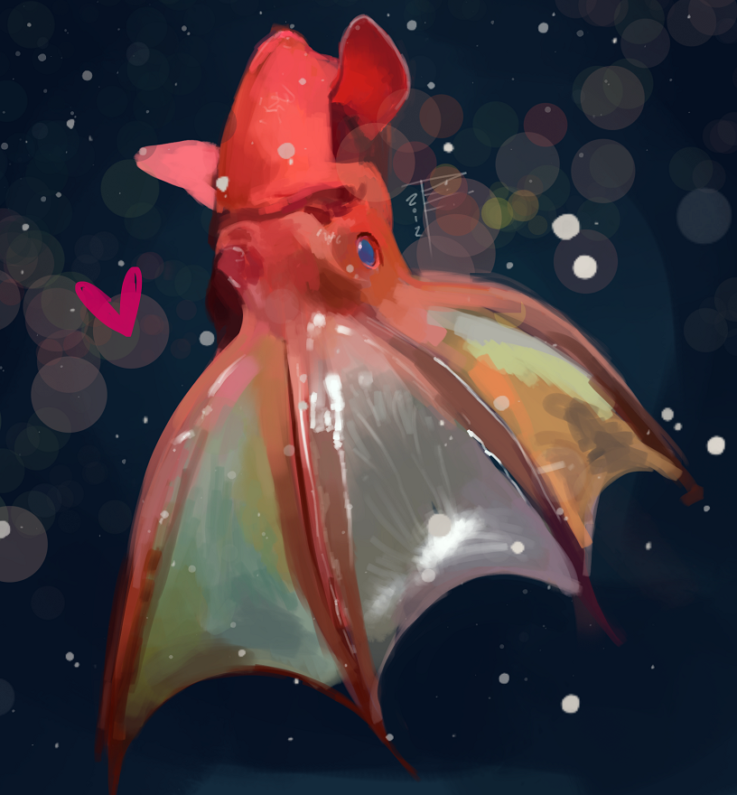

|
DescriptionThe vampire squid can reach a maximum total length c. 30 cm (0.98 ft). Its 15-cm (6-in) gelatinous body varies in colour from velvety jet-black to pale reddish, depending on location and lighting conditions. A webbing of skin connects its eight arms, each lined with rows of fleshy spines or cirri; the inner side of this "cloak" is black. Only the distal half (farthest from the body) of the arms have suckers. Its limpid, globular eyes, which appear red or blue, depending on lighting, are proportionately the largest in the animal kingdom at 2.5 cm (0.98 in) in diamete] The animal's dark colour, cloak-like webbing, and red eyes give the vampire squid its name — it does not feed on blood |
 |
|  |
Habitat and adaptationsThe vampire squid is an extreme example of a deep-sea cephalopod, thought to reside at aphotic (lightless) depths from 600 to 900 metres (2,000 to 3,000 ft) or more. Within this region of the world's oceans is a discrete habitat known as the oxygen minimum zone (OMZ). Within the OMZ, oxygen saturation is too low to support aerobic metabolism in most higher organisms. Nonetheless, the vampire squid is able to live and breathe normally in the OMZ at oxygen saturations as low as 3%; an ability that no other cephalopod, and few other animals, possess. |
Relationships
The Vampyromorphida are characterized by derived characters such as the possession of photophores and of two velar filaments which are most probably modified arms. It also shares the inclusion of an internal gladius with other coleoids, including squid, and eight webbed arms with cirrate octopods.
Vampyroteuthis shares its eight cirrate arms with the Cirrata, in which lateral cirri, or filliments, alternate with the suckers. Vampyroteuthis differs in that suckers are present only on the distal half of the arms while cirri run the entire length. In cirrate octopods suckers and cirri run, alternating, the entire length. Also, a close relationship between Vampyroteuthis and the Jurassic-Cretaceous Loligosepiina is indicated by the similarity of their gladiuses, the internal stiffening structure. However, the inclusion of Vampyronassa rhodanica from the middle Jurassic La Voulte-sur-Rhône of France as a vampyroteuthid turns out to be rather doubtful.[15]
The supposed vampyromorphids from the Kimmeridgian-Tithonian (156–146 mya) of Solnhofen, Plesioteuthis prisca, Leptoteuthis gigas, and Trachyteuthis hastiformis, cannot be positively assigned to this group; they are large species (from 35 cm in P. prisca to > 1 m in L. gigas) and show features not found in vampyromorphids, being somewhat similar to the true squids, Teuthida.
|
BehaviorWhat behavioural data are known have been gleaned from ephemeral encounters with ROVs; animals are often injured during capture, and survive only two months in aquaria.[citation needed] An artificial environment makes reliable observation of non-defensive behaviour difficult. In May 2014, Monterey Bay Aquarium (California, United States) became the first to ever put this species on display.With their long velar filaments deployed, vampire squids have been observed drifting along in the deep, black ocean currents. If the filaments contact an entity, or if vibrations impinge upon them, the animals investigate with rapid acrobatic movements. They are capable of swimming at speeds equivalent to two body lengths per second, with an acceleration time of five seconds. However, their weak muscles limit stamina considerably |
 |
DevelopmentFew specifics are known regarding the ontogeny of the vampire squid. Their development progresses through three morphologic forms: the very young animals have a single pair of fins, an intermediate form has two pairs, and the mature form again has one. At their earliest and intermediate phases of development, a pair of fins is located near the eyes; as the animal develops, this pair gradually disappears as the other pair develops. As the animals grow and their surface area to volume ratio drops, the fins are resized and repositioned to maximize gait efficiency. Whereas the young propel themselves primarily by jet propulsion, mature adults find flapping their fins to be the most efficient means |
|


 1
1 2
2 3
3 4
4 5
5 6
6 7
7 8
8 9
9 10
10